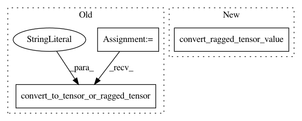

6d27bc93e1eba7d5d9dfa384593371d5a98ea5a5,tensorflow/python/keras/layers/wrappers_test.py,TimeDistributedTest,test_TimeDistributed_with_ragged_input,#TimeDistributedTest#Any#,410
Before Change
model_2._run_eagerly = testing_utils.should_run_eagerly()
output_dense = model_2.predict(dense_data, steps=1)
output_ragged = ragged_tensor.convert_to_tensor_or_ragged_tensor(
output_ragged, name="tensor")
self.assertAllEqual(output_ragged.to_tensor(), output_dense)
@keras_parameterized.run_all_keras_modes
def test_TimeDistributed_with_ragged_input_with_batch_size(self):
After Change
model_2._run_eagerly = testing_utils.should_run_eagerly()
output_dense = model_2.predict(dense_data, steps=1)
output_ragged = convert_ragged_tensor_value(output_ragged)
self.assertAllEqual(output_ragged.to_tensor(), output_dense)
@keras_parameterized.run_all_keras_modes
def test_TimeDistributed_with_ragged_input_with_batch_size(self):
In pattern: SUPERPATTERN
Frequency: 4
Non-data size: 3
Instances
Project Name: tensorflow/tensorflow
Commit Name: 6d27bc93e1eba7d5d9dfa384593371d5a98ea5a5
Time: 2021-01-12
Author: scottzhu@google.com
File Name: tensorflow/python/keras/layers/wrappers_test.py
Class Name: TimeDistributedTest
Method Name: test_TimeDistributed_with_ragged_input
Project Name: keras-team/keras
Commit Name: 7d818d66a243aaf5d4e0f58e257087b0957a1086
Time: 2021-01-13
Author: scottzhu@google.com
File Name: keras/layers/wrappers_test.py
Class Name: TimeDistributedTest
Method Name: test_TimeDistributed_with_ragged_input
Project Name: keras-team/keras
Commit Name: 7d818d66a243aaf5d4e0f58e257087b0957a1086
Time: 2021-01-13
Author: scottzhu@google.com
File Name: keras/layers/wrappers_test.py
Class Name: TimeDistributedTest
Method Name: test_TimeDistributed_with_ragged_input_with_batch_size
Project Name: tensorflow/tensorflow
Commit Name: 6d27bc93e1eba7d5d9dfa384593371d5a98ea5a5
Time: 2021-01-12
Author: scottzhu@google.com
File Name: tensorflow/python/keras/layers/wrappers_test.py
Class Name: TimeDistributedTest
Method Name: test_TimeDistributed_with_ragged_input_with_batch_size